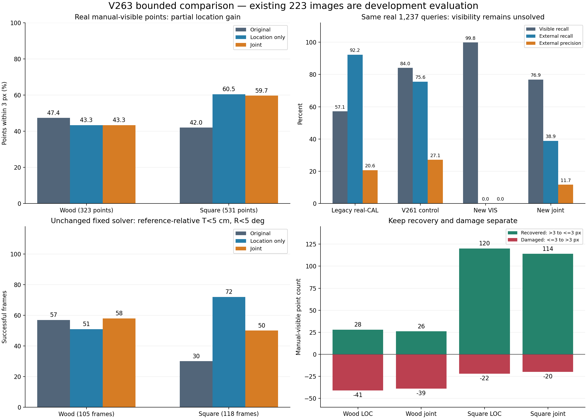

가림 판별 개선은 확인하지 못했습니다. 위치 보정은 정사각형에서 개선됐지만 목재 손상이 남습니다. 네 설정의 제한된 비교를 완료했으며 새 모델은 채택하지 않았습니다.
합성 7,040 query·원 FIT86/DEV24 base 분할, frozen DINOv2 중간층 공간 token, native8 condition, 21,989 parameter head를 사용했습니다. seed17·각1,000 AdamW 업데이트로 LOC 두 crop, 선택 crop의 VIS와 JOINT를 학습했습니다. 현재223장으로 학습·문턱·crop·모델을 고르지 않았습니다. 모든 checkpoint와 설정을 고정한 뒤 현재 전체 예측을 저장하고 정답과 결합했습니다.
880그룹의 같은 후단에서 ORIGINAL / 가시성 정답만 / 직접 관측 위치 정답만 / 둘 다를 비교했습니다. post의 고정 W/D 정규화 기준 성공은625 / 621 / 850 / 861장이지만, 물리 canonical C1 기준은242 / 243 / 313 / 313장입니다. 위치 개선 여지와 전역 방향·대응 문제를 구분해야 합니다. symmetry UNKNOWN에 임의 C2/C4 최소값을 적용하지 않았습니다. 기존 가상 cuboid 합성1,003장은 원 baseline만 전수 재현했고, 직접 관측 GT가 없는 세 oracle을 대체 정답으로 만들지 않았습니다. oracle 전체 통계와 복구·손상
합성 DEV의 위치 감독 유효1,284점에서 3px 이내는 771→1,263점, JOINT 중앙오차는2.436→0.503px, 복구492·손상0입니다. 합성의 직접 관측 마스크는 물리적 native anchor와 두 방향의 visible witness 근거이며 독립적인 photometric 정답은 아닙니다.

PRIMARY 총1,237 query(D1,147·E90). 행은 정답 D/E, 열은 예측 D/E/U입니다. recall 분모에 U를 포함합니다. SELF는 외부가림에 합치지 않았으며 별도 CSV에 보존했습니다.
| 집단 | 모델 | 정답 D/E | CM D행 / E행 | D recall | E precision | E recall | 보류율 |
|---|---|---|---|---|---|---|---|
| ALL | v61 | 1147/90 | [260,887,0] / [2,88,0] | 22.67% | 9.03% | 97.78% | 0.00% |
| ALL | CAL_LEGACY | 1147/90 | [655,319,173] / [3,83,4] | 57.11% | 20.65% | 92.22% | 14.31% |
| ALL | V261_CONTROL | 1147/90 | [964,183,0] / [22,68,0] | 84.05% | 27.09% | 75.56% | 0.00% |
| ALL | V261_TREAT | 1147/90 | [959,188,0] / [22,68,0] | 83.61% | 26.56% | 75.56% | 0.00% |
| ALL | JOINT_SELECTED | 1147/90 | [882,265,0] / [55,35,0] | 76.90% | 11.67% | 38.89% | 0.00% |
| ALL | VIS_ONLY_SELECTED | 1147/90 | [1145,2,0] / [90,0,0] | 99.83% | 0.00% | 0.00% | 0.00% |
| WOOD_PRIMARY105 | v61 | 616/29 | [145,471,0] / [0,29,0] | 23.54% | 5.80% | 100.00% | 0.00% |
| WOOD_PRIMARY105 | CAL_LEGACY | 616/29 | [448,65,103] / [2,23,4] | 72.73% | 26.14% | 79.31% | 16.59% |
| WOOD_PRIMARY105 | V261_CONTROL | 616/29 | [534,82,0] / [8,21,0] | 86.69% | 20.39% | 72.41% | 0.00% |
| WOOD_PRIMARY105 | V261_TREAT | 616/29 | [549,67,0] / [9,20,0] | 89.12% | 22.99% | 68.97% | 0.00% |
| WOOD_PRIMARY105 | JOINT_SELECTED | 616/29 | [519,97,0] / [23,6,0] | 84.25% | 5.83% | 20.69% | 0.00% |
| WOOD_PRIMARY105 | VIS_ONLY_SELECTED | 616/29 | [614,2,0] / [29,0,0] | 99.68% | 0.00% | 0.00% | 0.00% |
| SQUARE118 | v61 | 531/61 | [115,416,0] / [2,59,0] | 21.66% | 12.42% | 96.72% | 0.00% |
| SQUARE118 | CAL_LEGACY | 531/61 | [207,254,70] / [1,60,0] | 38.98% | 19.11% | 98.36% | 11.82% |
| SQUARE118 | V261_CONTROL | 531/61 | [430,101,0] / [14,47,0] | 80.98% | 31.76% | 77.05% | 0.00% |
| SQUARE118 | V261_TREAT | 531/61 | [410,121,0] / [13,48,0] | 77.21% | 28.40% | 78.69% | 0.00% |
| SQUARE118 | JOINT_SELECTED | 531/61 | [363,168,0] / [32,29,0] | 68.36% | 14.72% | 47.54% | 0.00% |
| SQUARE118 | VIS_ONLY_SELECTED | 531/61 | [531,0,0] / [61,0,0] | 100.00% | — | 0.00% | 0.00% |
총857점 중 원입력U3점을 제외한854점입니다. 위치 보류는 원q 유지입니다. accepted 정확도는 이 수동 클릭 보임 집단의3px 기준이며 전체 가림 판별 precision과 다릅니다. JOINT 전체3px 이내376→457점, 복구140·손상59입니다. 목재는153→140/323점으로 감소했고 정사각형은223→317/531점으로 증가했습니다. 원오차≤3px인376점에서도 JOINT가102점을 외부가림으로 오판했습니다.
| 집단 | 구성 | 측정가능 N | 전체≤3px | 복구 | 손상 | accepted≤3px | 최종 median / p90 px |
|---|---|---|---|---|---|---|---|
| ALL | ORIGINAL_QUERY | 854 | 44.03% | 0 | 0 | — | 3.562 / 10.333 |
| ALL | LOC_ONLY_INITIAL_GEOMETRY | 854 | 53.98% | 148 | 63 | 58.48% | 2.788 / 8.402 |
| ALL | JOINT_SELECTED | 854 | 53.51% | 140 | 59 | 58.27% | 2.781 / 9.090 |
| WOOD_PRIMARY105 | ORIGINAL_QUERY | 323 | 47.37% | 0 | 0 | — | 3.256 / 18.954 |
| WOOD_PRIMARY105 | LOC_ONLY_INITIAL_GEOMETRY | 323 | 43.34% | 28 | 41 | 41.84% | 3.501 / 20.941 |
| WOOD_PRIMARY105 | JOINT_SELECTED | 323 | 43.34% | 26 | 39 | 40.27% | 3.616 / 21.323 |
| SQUARE118 | ORIGINAL_QUERY | 531 | 42.00% | 0 | 0 | — | 3.678 / 9.112 |
| SQUARE118 | LOC_ONLY_INITIAL_GEOMETRY | 531 | 60.45% | 120 | 22 | 70.21% | 2.577 / 6.543 |
| SQUARE118 | JOINT_SELECTED | 531 | 59.70% | 114 | 20 | 71.57% | 2.492 / 6.965 |
미리 정한12개 결과 cell에서 전체 cell 수를 표시하고 최소 row index를 택했습니다. 성공·실패를 설명하는 선택 사례이며 원인별 전체 비율은 아닙니다. 보이는 목재 모서리를 E로 부르는 사례, 가려진 점 대신 주변의 강한 경계를 고르는 사례, 정확하던 점을 옮겨 손상시키는 사례가 있습니다. 합성에서 고른 관측 적합성 규칙의 실사 전이가 충분하지 않습니다.
기존 solver·문턱·참조 C2/C4 대칭 계약을 그대로 재생했습니다. 아래는 기존 참조에 상대적인 T<5cm·R<5도 성공이며 독립6D 정답 검증이 아닙니다. ORIGINAL223은 기존 초기 pose와 최대8.81e−10 차이입니다. LOC는 정사각형30→72/118, 목재57→51/105입니다. 목재 LOC의 P95 이동오차84.25→119.58cm와 전체 평균 회전오차7.83→8.30도 악화도 남습니다. JOINT는120/223장에서 원결과 fallback을 사용했습니다.
| 집단 | 구성 | 성공 | fallback | T mean/P95 cm | R mean/P95 deg | canonical near90 |
|---|---|---|---|---|---|---|
| ALL223 | ORIGINAL | 87/223 | 0 | 12.35 / 38.91 | 7.83 / 81.61 | 25 |
| ALL223 | LOC_ONLY_INITIAL_GEOMETRY | 123/223 | 0 | 11.90 / 38.63 | 8.30 / 82.23 | 26 |
| ALL223 | VIS_ONLY_SELECTED | 87/223 | 0 | 12.33 / 38.91 | 7.82 / 81.45 | 24 |
| ALL223 | JOINT_SELECTED | 108/223 | 120 | 11.47 / 35.49 | 8.08 / 81.58 | 25 |
| SQUARE118 | ORIGINAL | 30/118 | 0 | 9.38 / 23.23 | 3.34 / 5.42 | 13 |
| SQUARE118 | LOC_ONLY_INITIAL_GEOMETRY | 72/118 | 0 | 6.93 / 25.54 | 3.42 / 5.21 | 13 |
| SQUARE118 | VIS_ONLY_SELECTED | 30/118 | 0 | 9.37 / 23.23 | 3.35 / 5.42 | 13 |
| SQUARE118 | JOINT_SELECTED | 50/118 | 90 | 8.26 / 23.23 | 3.33 / 5.42 | 13 |
| WOOD_PRIMARY105 | ORIGINAL | 57/105 | 0 | 15.68 / 84.25 | 12.87 / 85.63 | 12 |
| WOOD_PRIMARY105 | LOC_ONLY_INITIAL_GEOMETRY | 51/105 | 0 | 17.48 / 119.58 | 13.77 / 85.54 | 13 |
| WOOD_PRIMARY105 | VIS_ONLY_SELECTED | 57/105 | 0 | 15.66 / 83.73 | 12.85 / 85.63 | 11 |
| WOOD_PRIMARY105 | JOINT_SELECTED | 58/105 | 30 | 15.07 / 61.14 | 13.41 / 85.63 | 12 |
9월6일20개 영상에서 추출한1,505장 ZIP을 찾았습니다. 현재223장·기존학습851장과 encoded SHA 중복은0입니다. 점별 D/E 정답이 없고 이전 실험 노출은 확인되지 않아 이번 학습·평가에 편입하지 않았습니다. 기존 추가주석215장과194/290/51장 ZIP의 중복·과거 사용 이력은 조사 표에 있습니다.
전체 수치 JSON · 독립 산술 재검산12CM·6위치표 · 가림·위치 상세 보고 · 학습·특징·고정추론 재현 안내 · SELF 별도표
기존223장은 반복 개발 평가입니다. 이번 제한된 비교는 위치 학습의 가능성과 목재·가림·실사 acceptance의 미해결 범위를 보여줍니다. 수치 개선만으로 실제 배포의 신뢰도90%를 확인했다고 해석하지 않습니다.